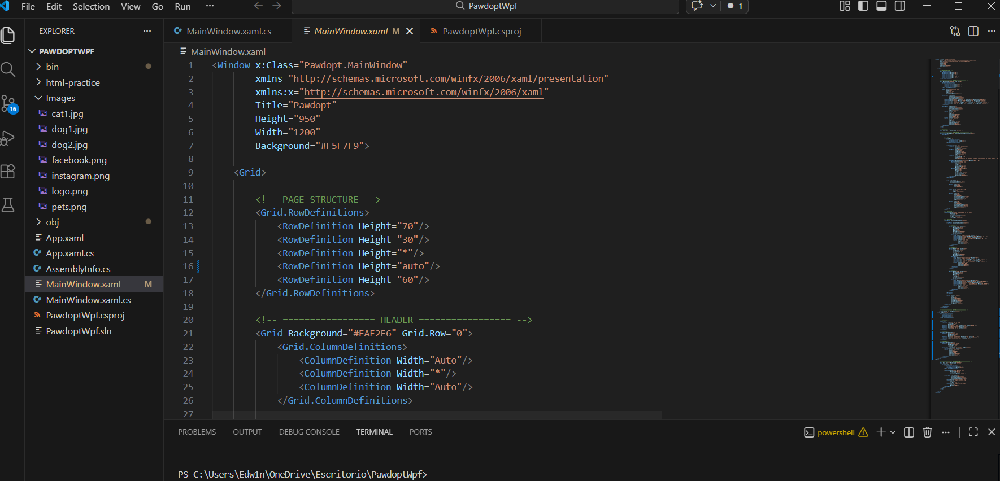
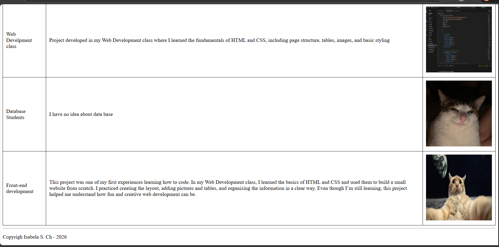
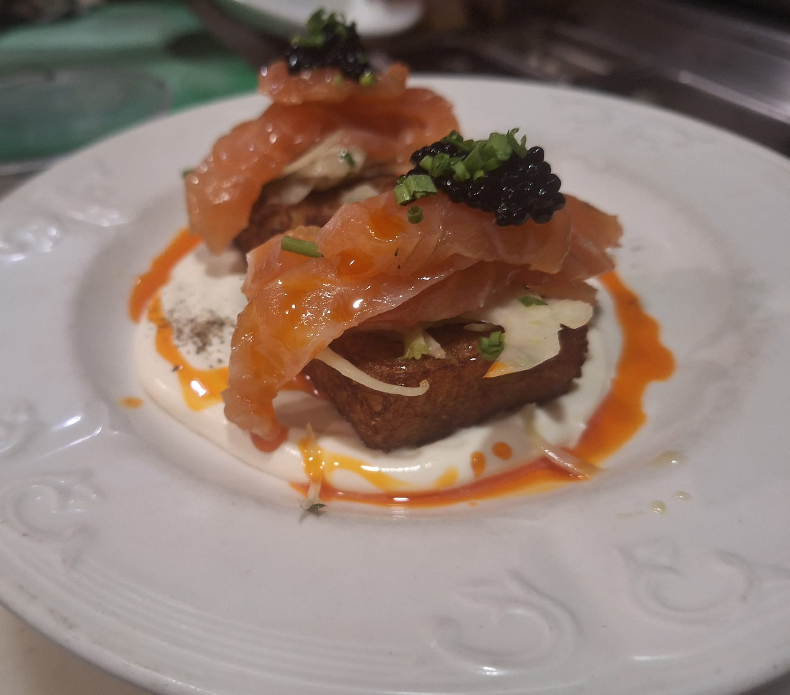

Welcome to my portfolio. I am currently learning web development and programming, and this website shows some of the projects I have worked on during my classes and personal practice. This is a space where I track my growth and the skills I’m building.
| Client | Description | Picture |
|---|---|---|
| Web Develpment class | This project is a small desktop application I built using C# and WPF. Throughout this project, I learned how to design and structure a user interface using XAML, including working with grids, rows, and layout components to organize the page in a clean and functional way. I also practiced adding and displaying images, arranging interactive buttons, and creating sections for navigation. Even though it was challenging at first, this project helped me understand how real Windows applications are created from scratch. It gave me experience with interface design, application structure, and the basics of building interactive desktop software. |  |
| Front-end development | This project was one of my first experiences learning how to code. In my Web Development class, I learned the basics of HTML and CSS and used them to build a small website from scratch. I practiced creating the layout, adding pictures and tables, and organizing the information in a clear way. Even though I’m still learning, this project helped me understand how fun and creative web development can be. |  |
| Cooking | Besides coding, I also work as a Line Cook. I’m used to fast-paced environments and staying calm under pressure, and honestly, those kitchen skills have helped me a lot while learning how to code and fix errors without panicking. |  |
Copyrigh Isabela S. Ch - 2026